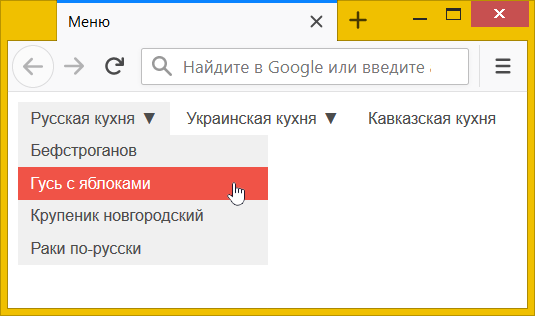

:only-child и :only-of-type
Псевдокласс :only-child выбирает дочерний элемент, только если он является единственным у своего родителя. В примере 1 зелёным цветом выделяется текст внутри первого <section>, поскольку он содержит лишь один элемент <div>. Второй <section> содержит уже два элемента (<div> и <p>) и :only-child не срабатывает.
Пример 1. Использование :only-child
<!DOCTYPE html>
<html>
<head>
<meta charset="utf-8">
<title>:only-child</title>
<style>
section :only-child {
color: green; /* Зелёный цвет текста */
}
</style>
</head>
<body>
<section>
<div>Я всегда Один</div>
</section>
<section>
<div>Ты не Один</div>
<p>Ты не Один</p>
</section>
</body>
</html>Селектор p:only-child находит элемент только при соблюдении двух условий: это единственный дочерний элемент и это элемент <p>. В примере 1 таких комбинаций нет — первый <section> содержит единственный дочерний элемент, но это не <p>, а <div>; второй <section> содержит два элемента и <p> не является единственным.
Псевдокласс :only-of-type выбирает дочерний элемент определённого типа, только если он является единственным у своего родителя. В примере 2 зелёным цветом будут выделены все <div>, поскольку внутри <section> они встречаются один раз. При этом наличие других элементов, вроде <p>, не учитывается.
Пример 2. Использование :only-of-type
<!DOCTYPE html>
<html>
<head>
<meta charset="utf-8">
<title>:only-of-type</title>
<style>
section div:only-of-type {
color: green; /* Зелёный цвет текста */
}
</style>
</head>
<body>
<section>
<div>Я всегда Один</div>
</section>
<section>
<div>Ты не Один</div>
<p>Ты не Один</p>
</section>
</body>
</html>Таким образом, p:only-child находит только единственный элемент и только если это <p>, а p:only-of-type находит элемент <p> и смотрит, является ли этот <p> единственным.
:only-child и :only-of-type находят применение при создании различных меню. На рис. 1 показано ниспадающее меню: при наведении на пункты меню раскрывается подменю со ссылками. Не все пункты являются раскрывающими и чтобы пользователь не путался, к раскрывающимся пунктам добавлена стрелочка.

Рис. 1. Ниспадающее меню
Само меню делается с помощью вложенного списка <ul>, а для отображения и сокрытия пунктов используется псевдокласс :hover и свойство display. Псевдокласс :only-child убирает стрелочку для единственного элемент <a> внутри списка, т. е. для пункта, в котором подменю нет (пример 3).
Пример 3. Ниспадающее меню
<!DOCTYPE html>
<html>
<head>
<meta charset="utf-8">
<title>Меню</title>
<style>
.menu, .menu ul {
/* Обнуляем отступы и убираем маркеры у списков */
list-style: none; margin: 0; padding: 0;
}
.menu {
font: 0.8rem Arial, sans-serif; /* Параметры шрифта */
}
.menu > li {
display: inline-block; /* Выстраиваем по горизонтали */
position: relative; /* Относительное позиционирование */
}
.menu a {
color: #4c4c4c; /* Цвет ссылок */
display: block; /* Блочные ссылки */
padding: 5px 10px; /* Поля */
text-decoration: none; /* Убираем подчёркивание */
}
.menu ul {
position: absolute; /* Абсолютное позиционирование */
display: none; /* Прячем подменю */
width: 200px; /* Ширина подменю */
}
.menu ul a:hover {
background: #f05347; /* Красный цвет фона */
color: #fff; /* Цвет текста */
}
.menu > li:hover > a, .menu li:hover ul {
background: #f0f0f0; /* Серый цвет фона */
}
.menu li:hover ul {
display: block; /* Показываем подменю при наведении */
}
.menu > li > a::after {
content: '▼'; /* Добавляем стрелочку */
padding-left: 5px; /* Расстояние слева */
}
.menu > li > a:only-child::after {
content: ''; /* */
}
</style>
</head>
<body>
<ul class="menu">
<li><a href="#">Русская кухня</a>
<ul>
<li><a href="#">Бефстроганов</a></li>
<li><a href="#">Гусь с яблоками</a></li>
<li><a href="#">Крупеник новгородский</a></li>
<li><a href="#">Раки по-русски</a></li>
</ul>
</li>
<li><a href="#">Украинская кухня</a>
<ul>
<li><a href="#">Вареники</a></li>
<li><a href="#">Жаркое по-харьковски</a></li>
<li><a href="#">Капустняк черниговский</a></li>
<li><a href="#">Потапцы с помидорами</a></li>
</ul>
</li>
<li><a href="#">Кавказская кухня</a></li>
</ul>
</body>
</html>